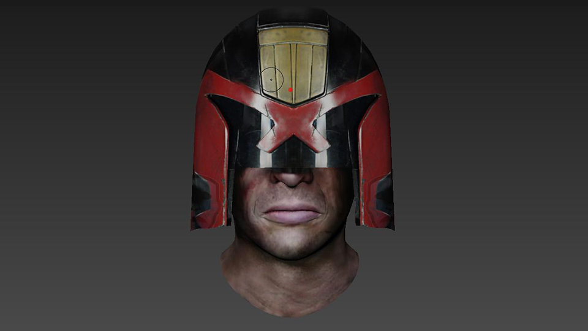
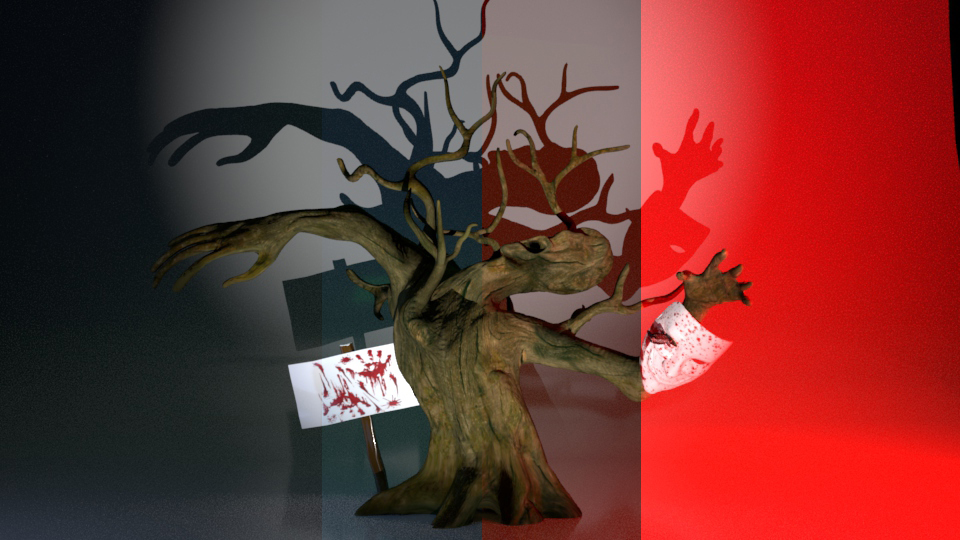
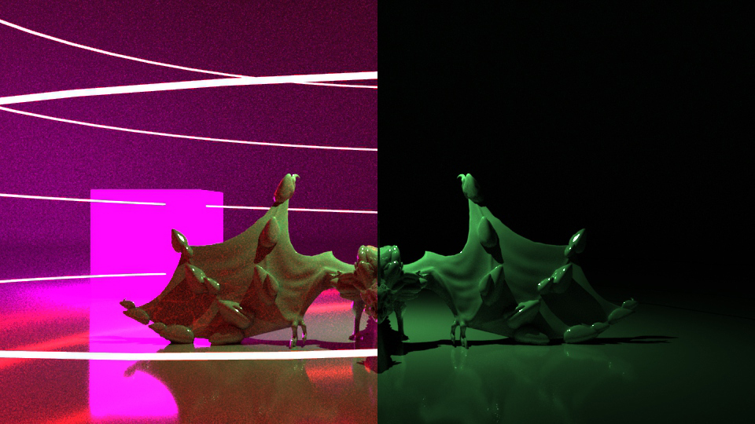
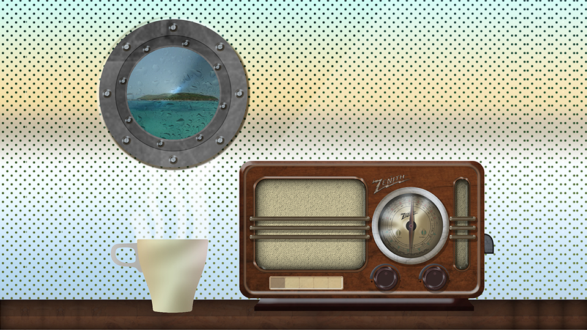
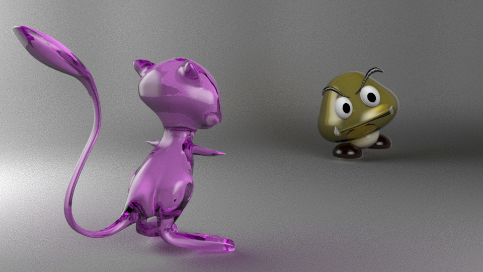

Mostra de Treballs
Inici
Currículum
Mostra de feines
Animacions
    
❮
❯
Aquesta és una mostra de les meves feines fetes prèviament i durant el
Cicle Formatiu d'Animacions 3D, Jocs i Entorns Interactius
. A sota trobareu algun turn arround d'algun model fet.